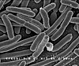

organism

Definition: An organism (from Ancient Greek ὄργανον (órganon) 'instrument, implement, tool', and -ισμός (-ismós)) is any biological living system that functions as an individual life form. All organisms are composed of cells (cell theory). The idea of organism is based on the concept of minimal functional unit of life. Three traits have been proposed to play the main role in qualification as an organism:
Source: Wikipedia
Wikipedia Page
Wikidata Page